k-Day 150｜獨庫公路（五）路上的陌生人
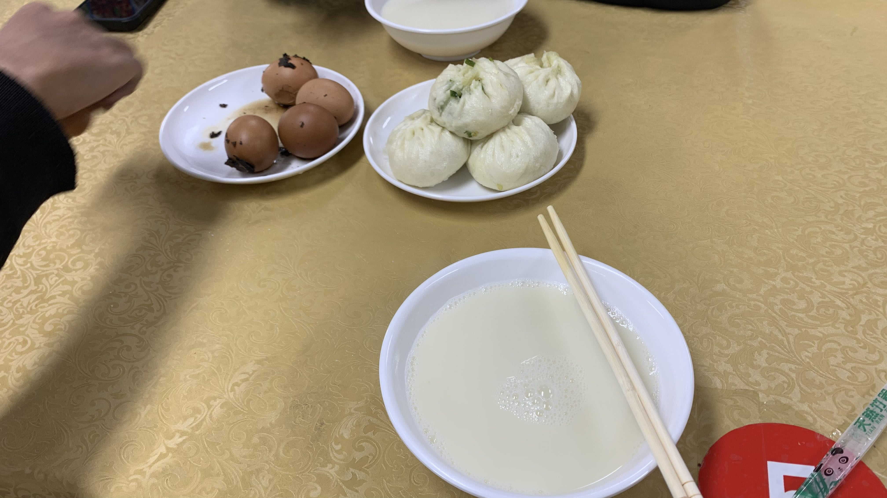
出發時三人一起到服務區的早餐店吃包子，大哥依然掏錢請客。
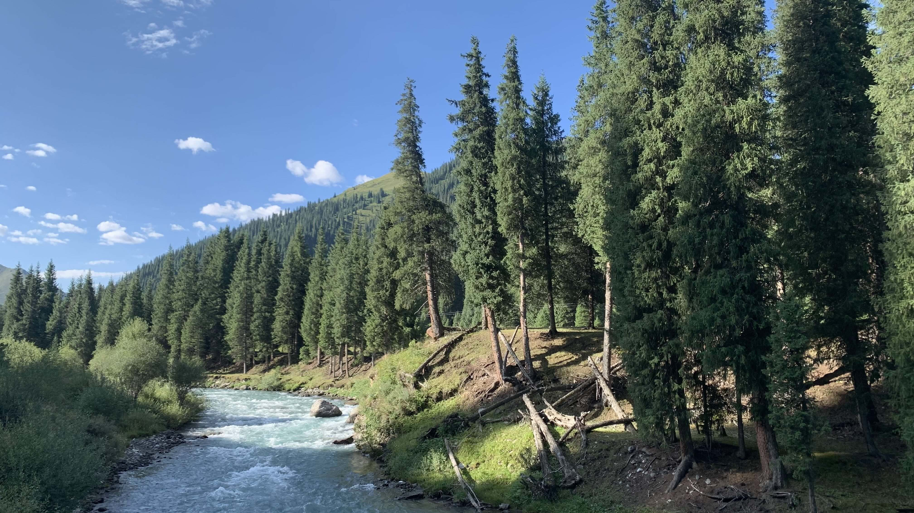
今日出發後，路邊已是草坪、樹林和溪流組成的畫面。
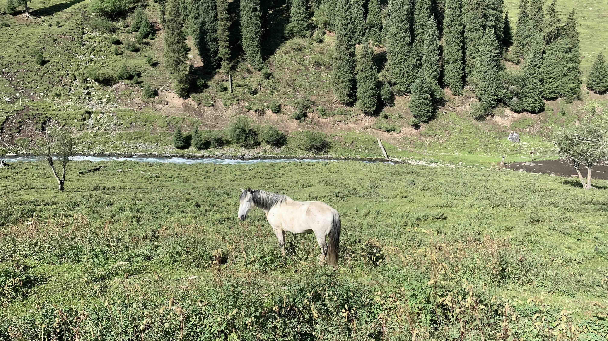
草坪上出現一批白馬，走路一跛一跛，沒什麼精神。
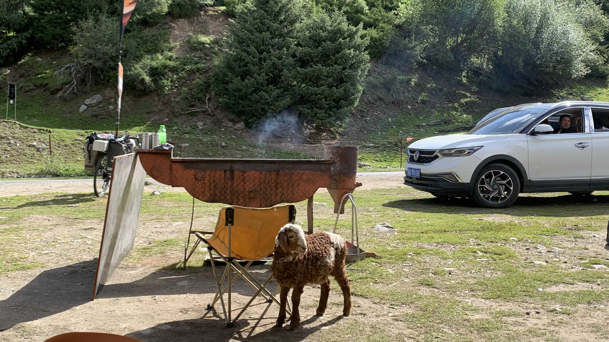
約莫騎了十公里，看到小蔣在路邊招手。大哥邀請我和他們一起吃羊肉串喝咖啡休息，當然也是參考了路書的規劃。
「今天你會看到我們經過的路旁都是草甸，但是這還不是真正的草甸區。昨天我們走的是盤山路，今天是草甸和樹林，明天到那拉提，那拉提到巴音布魯克是真正的草甸區，最後一天會看到丹霞地貌。」大哥指著地圖，不時點開路書照片給我看。
旅行那麼久，第一次和人搭伙騎車，看著眼前兩位臨時同伴，總覺得不太對勁。雖然大哥從昨天開始直到現在仍然不斷強調自己和小蔣就是沒有任何利益，不貪圖對方什麼的緣分，但是他總是用命令句的語氣要小蔣去幫他拿車包裡的東西，或者把東西塞給他讓他拿去放。
小蔣當然也是樂意的，而且並非無意識。雖然對大哥說話時禮貌有加，但是和餐廳服務員或者其他人說話時也會拉高音量轉變成命令句。
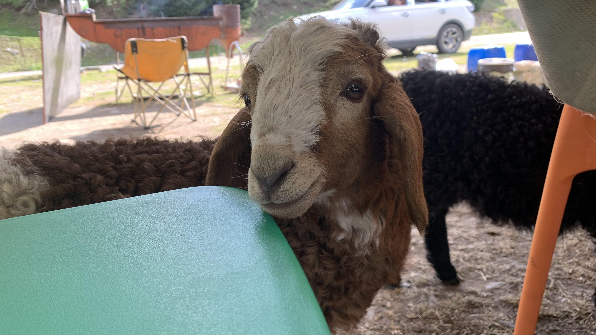
吃羊肉串時有隻小羊走進棚裡。
他輕輕地靠近我的腳邊，用清澈的眼神盯著我手中的羊肉串。啊啊啊啊！不可以看啊！！！！
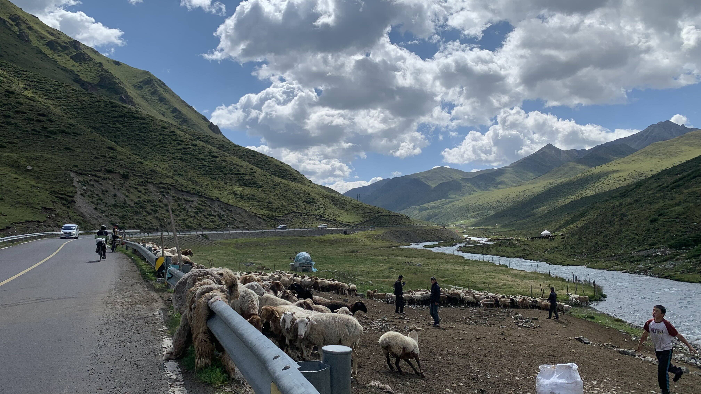
沿著河谷緩緩爬升，今天的山口海拔是3200公尺，接著是四十公里的下坡。當然是路書上寫的。
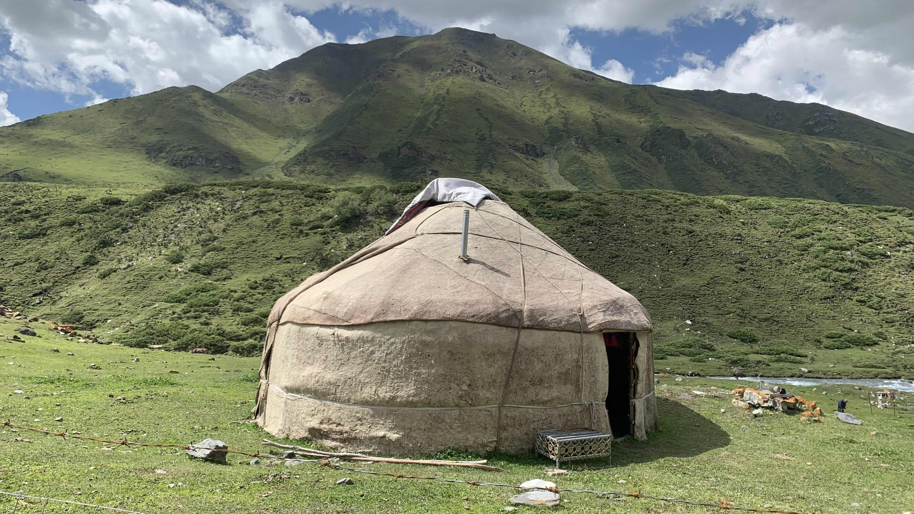
這個毛氈房和其他的看來不同，似乎是動物的皮曬乾了縫製而成的。
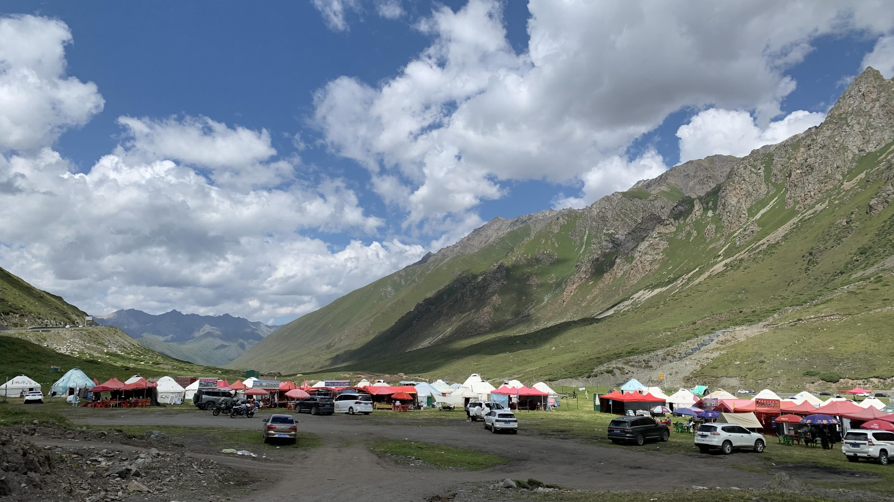
這條路完全沒有一點神聖感，二十公里處不意外迎來大型燒烤區，停車休息時不斷有人問你要不要騎馬。蒙古發展觀光後也會變成這樣嗎？
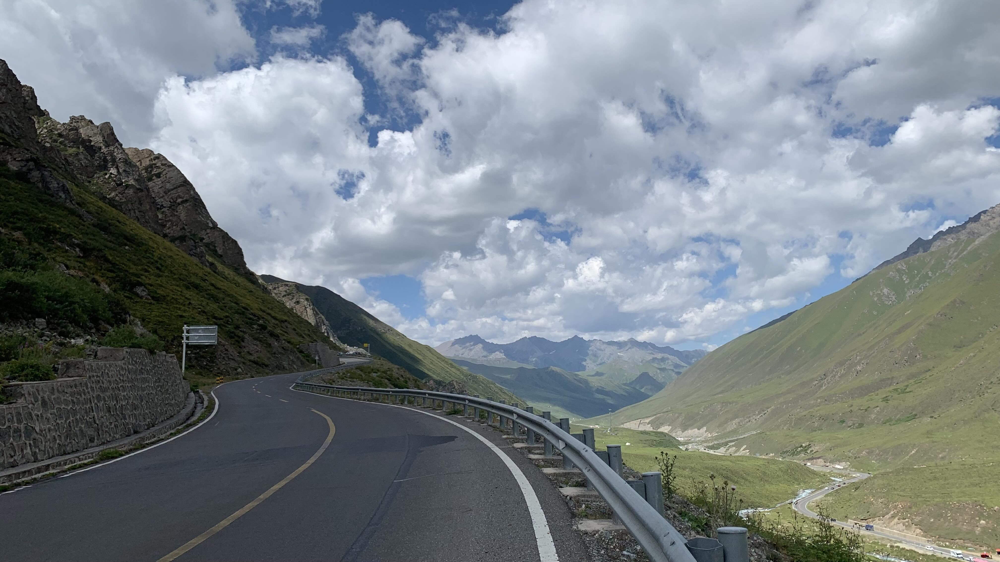
這高度開始會有點癢了。
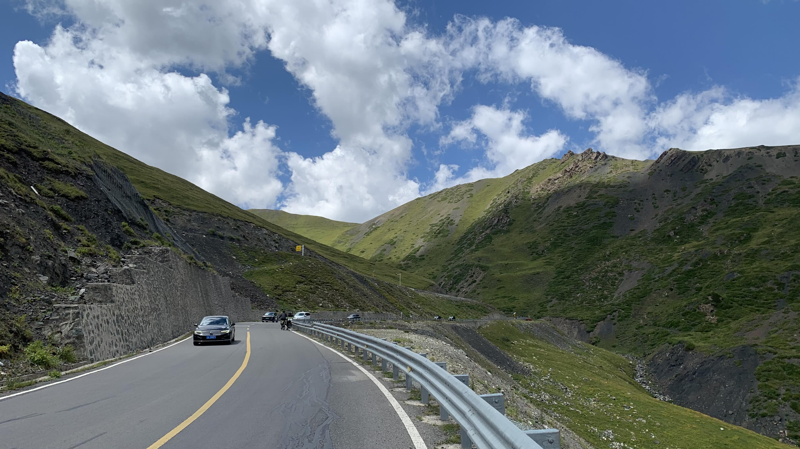
不敢往旁邊看，繼續慢慢騎上山。
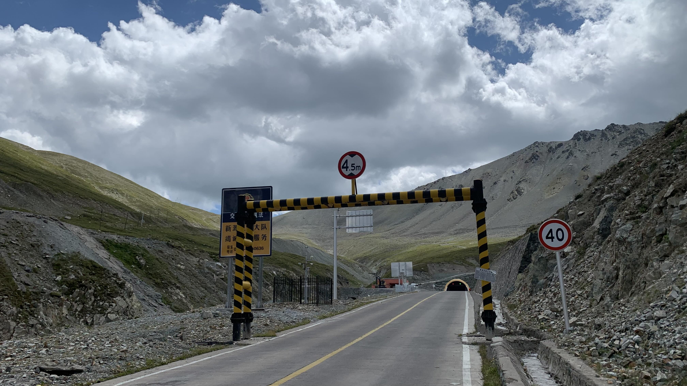
抵達隧道口，小蔣和大哥都還沒到，不確定要不要等他們。猶豫之際一名粉紅頭少年騎著公路車靠近：「你好快啊！我早上還看到你們在山下吃烤肉串呢！」原來是特地來騎獨庫的大學生，在網上和一群不認識的人聯繫上，大家一起組隊上山。
既然我們的臨時隊友都還沒爬上來，就一起在這休息一下吧。
陸陸續續上來了四個人，大家包上防風外套，打開前後燈準備一起通過。
小蔣將車上喝完的可樂瓶往水路邊的水溝一扔，我瞪大眼睛看著他說：「你為什麼要在天山上丟垃圾？」
他有點尷尬的笑著說了什麼。見他沒有要撿起瓶子，我又補了一句：「現在撿起來。」
不知道自己為何會這麼生氣，但是晚上跑去要唱歌阿北關上卡拉ok音箱，沒幾天又要大學生撿起丟在地上的垃圾，長此以往我可能會被揍的。
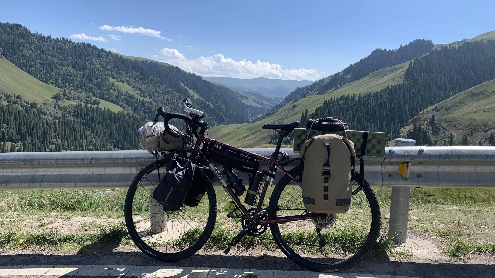
隧道後方是四十公里下坡，身上穿了防風外套，也套了長褲和手套，穿著涼鞋的腳趾被風吹得僵硬。
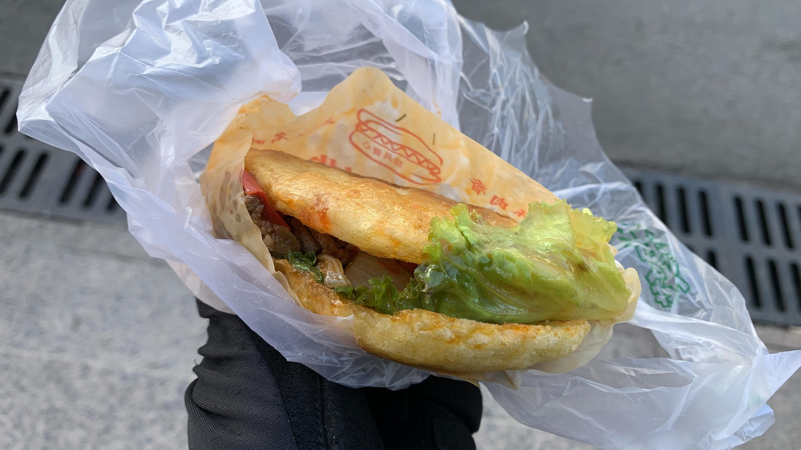
滑到休息區，買了一份不知道是什麼的肉餅，和另外兩個一起滑下山的小夥伴蹲在門口階梯上啃食。看了看手錶，均速超過40公里/小時。
他們在等其他夥伴，我則先往今晚可能有的住宿地出發。
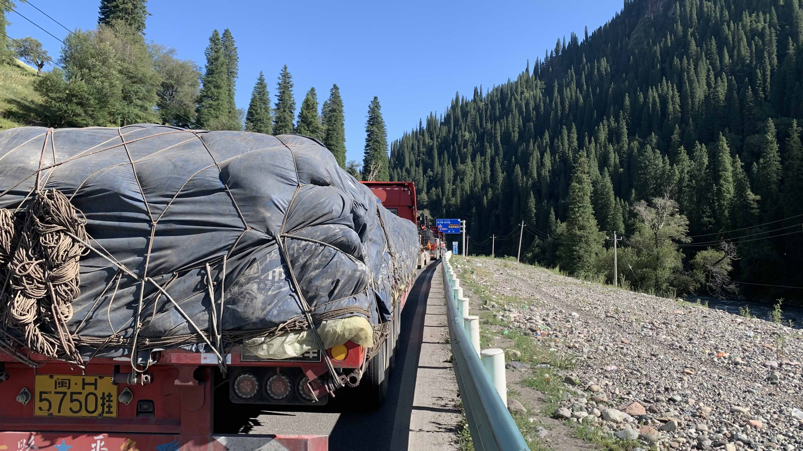
獨庫公路每晚會有道路管制，時間一到就封住山下各個路口無法再往上爬。
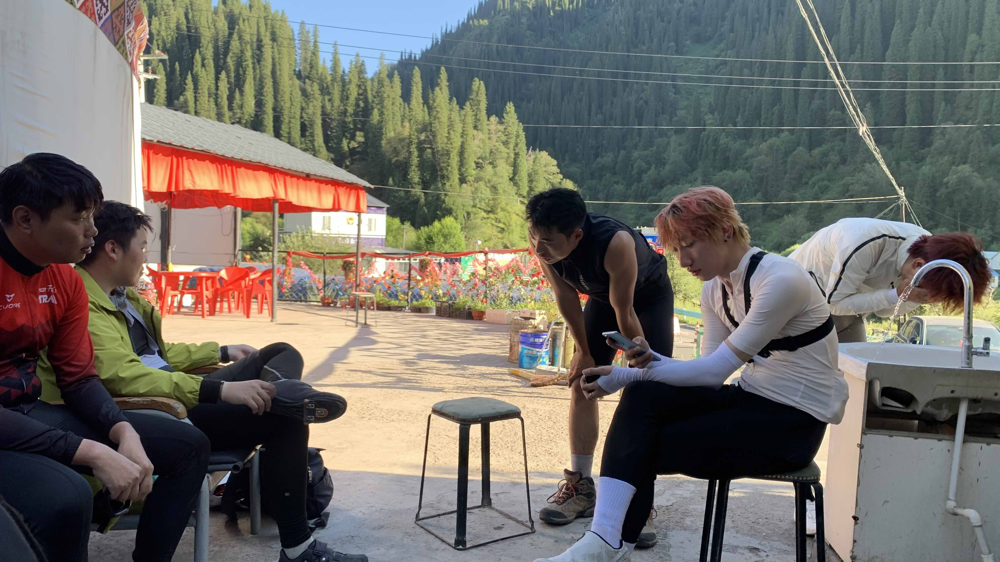
和其他騎士們一起住在山下的民宿，陸陸續續大家都下山了。這群小夥伴也是從第一天就一直在路上不斷遇見，大家都來自不同地方，只為了騎這條路，就這樣湊在一起。
最左邊的是廣東人、左二是四川人，中間黑衣服的是剛爬完雪山聽說有這活動，就在烏魯木齊迪卡儂買了車衣車褲，租了一輛車跟上來，剛剛被我和粉紅頭大學生在下坡時超車的。最右邊兩位雖然都是粉紅頭，卻並不認識。大家坐著聊天，打算待會一起進去吃飯。
大家一邊聊天，一邊分享自己在路上幫對方拍下的照片和影片。完全是自發性的，只覺得眼前這騎車的背影好像很可以，就這樣按下快門鍵。
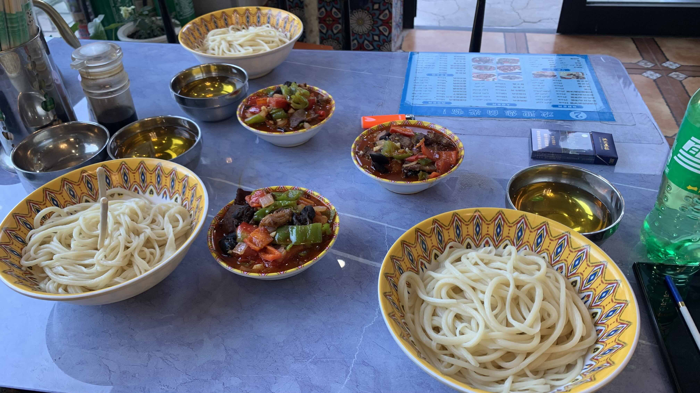
「你到底要不要進來吃飯？」突然聽到有人大喊，越過人群看到小蔣從餐廳門口探出半個身體。
不過今天想和大學生們一起吃呢，因此讓他先吃吧。沒想到過了一陣他又探出頭大喊：「你到底要不要進來吃飯？」
如此強硬的請客方式還是第一次遇到。
進門後大哥還沒就坐，餐廳的老闆或者是服務生阿姨走來問需不需要加麵，小蔣於是幫大哥多點了一份面。服務生阿姨的口音聽起來是少數民族，溝通時可能沒聽清，因此端了兩盤小面上來，小蔣用不耐的表情和的語氣說：「你拿這什麼東西？」也許是旁邊年輕的服務員注意到，因此走來協調，並將那碗多的麵撤走。
吃飽飯又回到院子裡，和大學生們閒聊一陣。住在阿克蘇的弟弟給我看了路線圖，但是阿克蘇的口岸是別迭里，在烏魯木齊時已經確認台灣人不能通行。其他人對廣州弟弟說：「你的手機不是哀鳳嗎？你查查看。」
我低頭瞥了一眼螢幕：「你的地圖怎麼和我長得不一樣？我的也是哀鳳呢？」
「這是深圳版哀鳳，是閹割版的，只有這裡才買得到。」大家笑成一團，背後突然出現一名大叔說：「你的是灣版的，只有你們那個島才用，你們那個島才一丁點大，全世界都不用。」
頓時大家陷入沈默。沒有要戰年紀，但就是有一群老人喜歡戰地域呢。
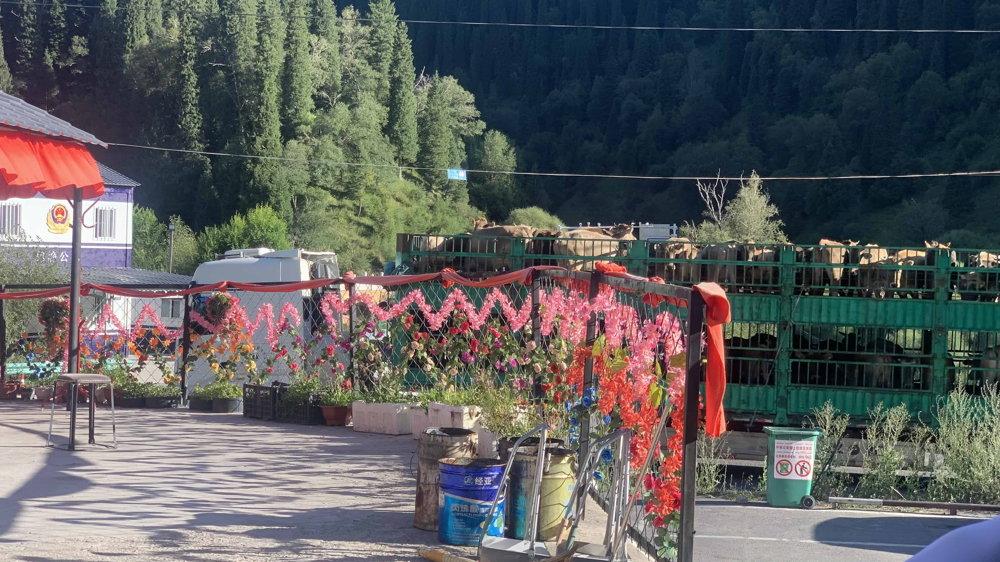
民宿老闆讓我在餐廳旁的院子搭帳篷，這裡天氣不冷不熱，相當舒適。
今日花費：肉餅＋汽水 20、飲料 9元